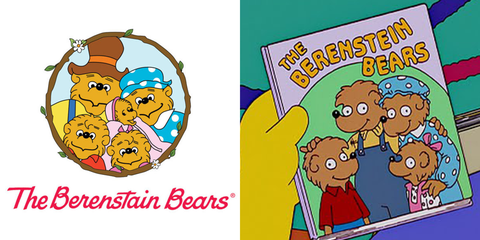
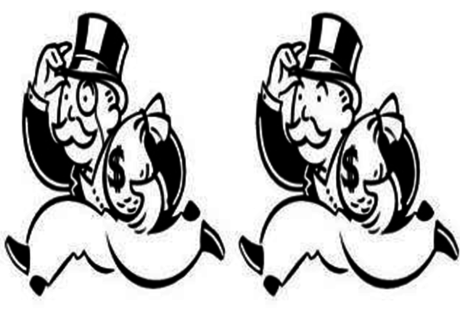
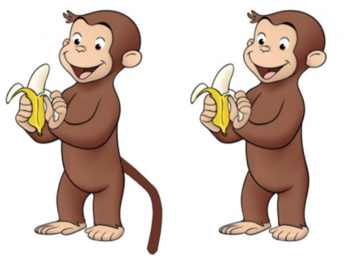

The Berenstain Bears Everyone remembers that berenstein bears right? Everyones favorite childhood book and show. It is something many cherishes in their memories.But what if I told you that it was actually spelled with an A instead of an E.

The Monopoly Man
The game that can break a family over frustration. Every one has once played monopoly. Think back..did he have a monocle? Well, he never had one. If you remember him having one than you have been apart of the Mandela effect.

Curious George
Many remember seeing the curious monkey George use his tail to swing from the G in the tile and to swing across trees. But in reality, he doesn't have one. So, have you been apart of the Mandela effect?
